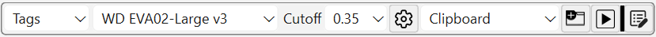
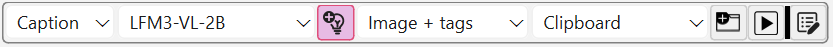
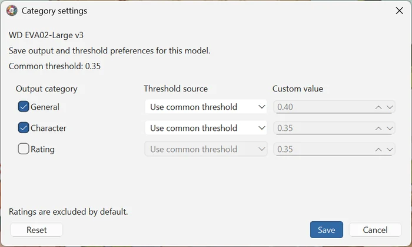
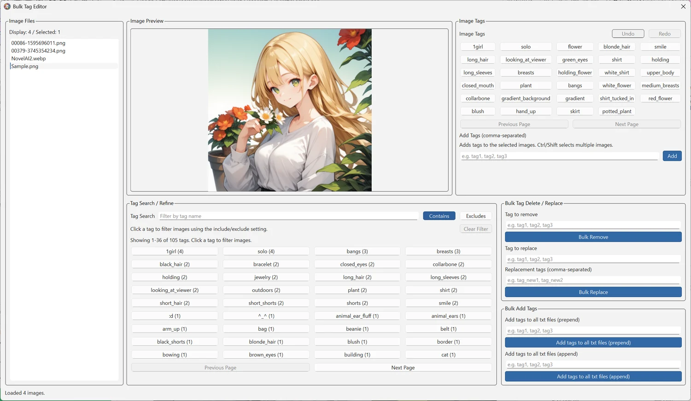

Tags & captions
The AI reads the image and generates tags (Danbooru style) or an English description (caption). Useful for building LoRA training data and organizing images.
Two generation typesTagsTagging modelsCaptionCaption modelsOutputCategory settingsBulk tag editorExample: building a training dataset
Two generation types
| Tags | Caption | |
|---|---|---|
| Example output | 1girl, solo, long_hair, blonde_hair, flower, smile … | A young woman with long blonde hair holds a bouquet of flowers … |
| Best for | Training tags for Stable Diffusion-style models, building prompts | Captions for models trained on sentences, image descriptions |
| What you can adjust | Cutoff, output categories | Input (Image only / Image + tags), thinking on / off |
| Output | TXT file / Embed in image / Clipboard | TXT file / Clipboard |
Tags

12345678
| 1Generation type | Choose "Tags". |
| 2Model | Model used for tagging (see below). Switching models also resets the cutoff to that model's default. |
| 3Cutoff | How confident a tag must be to be output. Higher gives fewer tags, lower gives more. |
| 4Category settings | Which categories to output (general, character, rating, ...) and per-category cutoffs. |
| 5Output | TXT file (.txt with the same name as the image) / Embed in image / Clipboard (see below). |
| 6Folder | When on, running processes every image in the same folder (not available for Clipboard). |
| 7Run | Generates and writes to the chosen output. |
| 8Bulk tag editor | Edits the .txt tags in the folder together (see below). |
Tagging models
No model is bundled with the app; each is downloaded on first use. If unsure, start with the default, WD EVA02-Large v3.
| Model | Default cutoff | Tags | Knowledge up to | Notes |
|---|---|---|---|---|
| WD EVA02-Large v3 | 0.35 | 10.9k | Feb 2024 | Default model. The WD standard |
| WD EVA02 2026 Canary | 0.55 | 16.5k | May 2026 | Derivative of WD EVA02-Large v3 trained on newer data |
| PixAI Tagger v1.0 | 0.35 | 30.9k | May 2026 | Heavy, high-resolution model. GPU recommended |
| CL Tagger v1.02 | 0.55 | Also outputs quality and rating categories | ||
| CL Tagger v2.00 | 0.55 | 108.0k | ~2026 (estimated) | Over 100k tags. Own license: place the files manually |
| OppaiOracle V1.1 | 0.75 | 19.3k | ~2024 (estimated) | Trained on data with wrong / missing tags corrected |
| Z3D-E621 ConvNext | 0.35 | e621-style tags (for furry images) |
Caption

12345678
| 1Generation type | Choose "Caption" to generate an English paragraph describing the image. |
| 2Model | Model used for captions (see below). |
| 3Thinking on / off | When on, the model considers the image before writing. Often more accurate, but slower. |
| 4Input | Image only / Image + tags. With Image + tags, tags are first generated with the model, cutoff and category settings chosen under Tags, and used as hints for the caption. |
| 5Output | TXT file (image-name.caption.txt) / Clipboard. |
| 6Folder | When on, running processes every image in the same folder (not available for Clipboard). |
| 7Run | Generates and writes to the chosen output. |
| 8Bulk tag editor | Edits tag .txt files in bulk (.caption.txt files are excluded). |
Caption models
No model (including the default, Florence-2 Base) is bundled with the app; each is downloaded on first use. If you run short of GPU memory (VRAM), choose a smaller model.
| Model | First download | VRAM guide | Image + tags | Thinking |
|---|---|---|---|---|
| Florence-2 Base (default) | ~0.93 GB | — | — (image only) | — |
| Qwen3.5 2B | ~1.95 GB | 4 GB | Yes | Yes |
| Gemma 4 E2B | ~3.83 GB | 4.5 GB | Yes | Yes |
| LFM3-VL-2B | ~1.43 GB | 4 GB | Yes | Yes |
| JoyCaption Beta One | ~5.36 GB | 6.5 GB | Yes | — |
Output
| Output | Description |
|---|---|
| TXT file | Saves in the image's folder. For Sample.png, tags use Sample.txt and captions use Sample.caption.txt. |
| Embed in image | Writes the tags into the image metadata as a prompt (PNG: parameters, JPEG / WebP: Exif). Shown as the prompt in Metadata Details. Tags only. |
| Clipboard | Copies the result for the current image. Not available for folder batch. |
Category settings

12345| 1Output category | Only tags in checked categories are output. Available categories depend on the model. |
| 2Threshold source | Use the common cutoff from the toolbar, or set a custom value per category. |
| 3Custom value | Cutoff for each category. |
| 4Reset | Restores the defaults (ratings are not output by default). |
| 5Save | Saves the settings for this model. |
Bulk tag editor

123456| 1Image Files | Images in the folder. Use Ctrl / Shift for multiple selection. |
| 2Image Preview | The selected image. |
| 3Image Tags | Tags in the selected image's .txt. Add tags separated by commas (Undo / Redo supported). |
| 4Tag Search / Refine | Lists every tag in the folder with counts. Click a tag to filter images that contain / exclude it. |
| 5Bulk Tag Delete / Replace | Removes a tag from every .txt, or replaces it with other tags. |
| 6Bulk Add Tags | Adds tags to the start or end of every .txt (e.g. trigger words). |
Example: building a training dataset
- Put the training images in one folder and open one of them
- In Tags, set Output to "TXT file", turn Folder on and run (every image gets a .txt with the same name)
- In the bulk tag editor, remove unwanted tags, replace inconsistent spellings and add a trigger word at the start
- If needed, use "Rename files" to number them sequentially (the .txt files are renamed too)